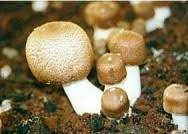

Página Inicial
Nossos Cogumelos
Cogumelos Comestiveis
Cogumelos venenosos
Fale Conosco
Nossa Galeria
Aqui vamos ver as várias espécies, comestiveis, venenosas e também medicinais.

Agora vamos ver um video de como é o nascimento dos Cogumelos
Erro: vídeo não suportado!